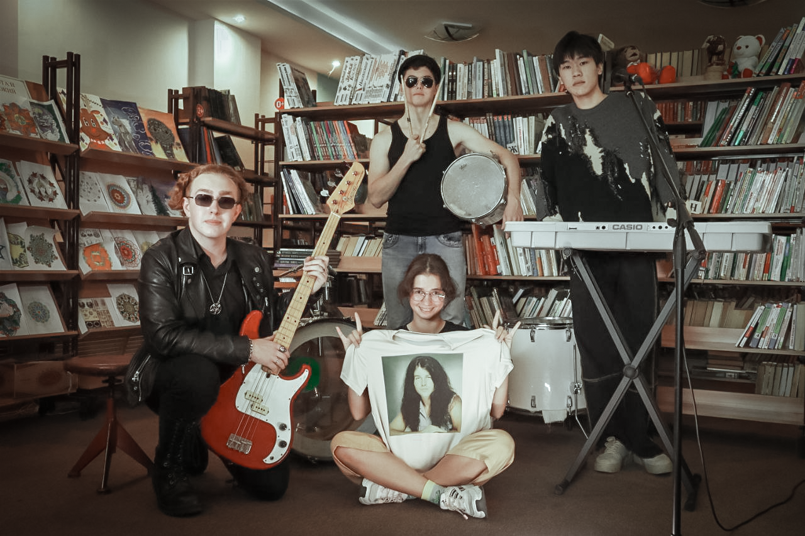
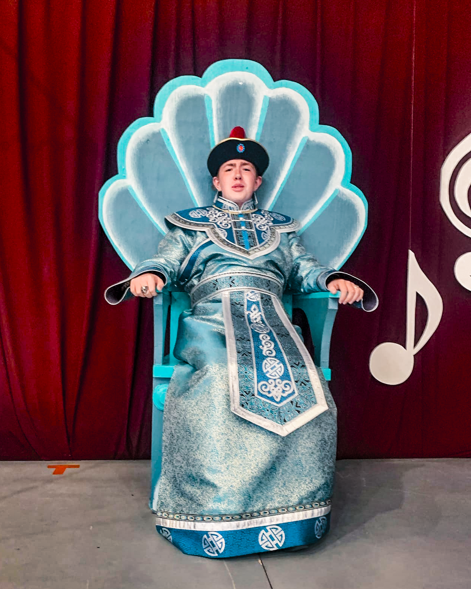

Музыкальное творчество
Начальное образование
С юных лет меня определили в Школу Искусств в народное отделение по специальности баян. Отучившись 8 лет, музыка не покинула меня и я решил частичку своей жизни связать именно с ней.
Проффесиональное продолжение
На протяжении 5 лет я работаю в различных музыкальных коллективах, как в роли музыканта, так вокалиста и фронтмена.
Видео Театр
Около 10-ти лет я отслужил в уже родной для себя театральной студии. Это было незабываемо прекрасное время. Постоянные репетиции, концерты, выступления не давали времени заскучать. Я успел примерить на себя огромное количество ролей, от Деда Мороза до Тетки Чарли и т.д.
Видео Искусство рифмоплетения
Примеры работ